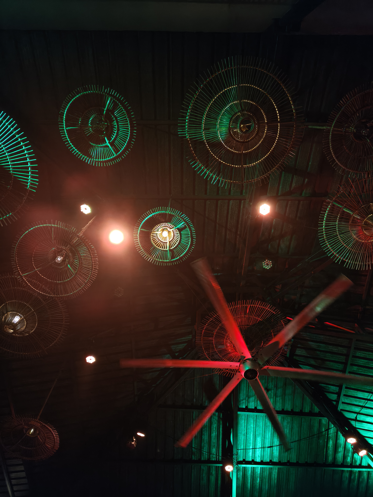

Thoughts
-
The different world

The world is not just trivial or simple. Philosophy without thc or psychedelics is nothing but a rant on the existing world.
[+][–]
These 'out of world' experiences while still 'in the world' are only possible because of the sine qua non of sensory perception.
The physical anchor of 'reality' seems to be 'broken' but who knows, the what if these substances give you the heightened senses, and after all extremes are where answers are found and things are not boring.
Maybe that's why, a person who has the ability to achieve total silence along with the ability to be comfortable in the highest senses is the one who is panoptic, attained full comprehension and has achieved omniscience.
It's like this, is h world looks small from the airplane, and so the problems do too. Same way.. the more extremes you get to see, the more the normal seems to get less prominence and more inconsequential
-
Keep the name with the quote
A sentence I liked is easy to save and easy to lose. What goes missing is the name, and where it was printed.
[+][–]
When a quotation is posted here, the name stays attached to it, and so does the book or the essay. Credit is part of the post.